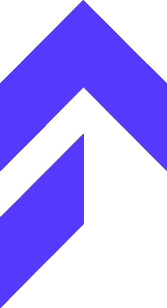

organAIzer
How it works
Use cases
Example
The problem
Your space feels messy — but knowing where to start is the hard part.
organAIzer helps you identify clutter, unsafe placement, wasted space, and simple improvements from a single photo. No judgment, no expensive furniture — just practical next steps using what you already have.
How it works
From a photo to a plan in four steps.
Step {{ s.n }}
{{ s.title }}
{{ s.body }}
Use cases
Not just desks.
Any small or cluttered space where you want a cleaner, safer, more usable layout.
{{ u.label }}
Example result
See what you'll get before you try.
Every analysis highlights problem zones on your photo and turns them into prioritized, practical suggestions — plus a short checklist you can act on right away.
Summary
Your space is usable, but the main work area is crowded and cables are exposed.
{{ c.label }}
{{ c.tag }}
{{ c.text }}
organAIzer — MVP demo
Your photo is used only to generate organization suggestions. Avoid uploading sensitive personal information.
Live demo